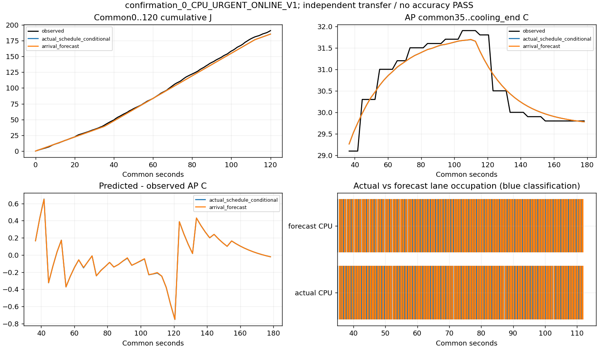
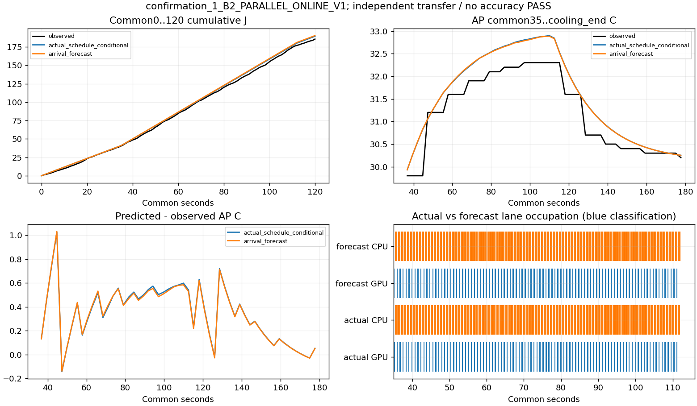
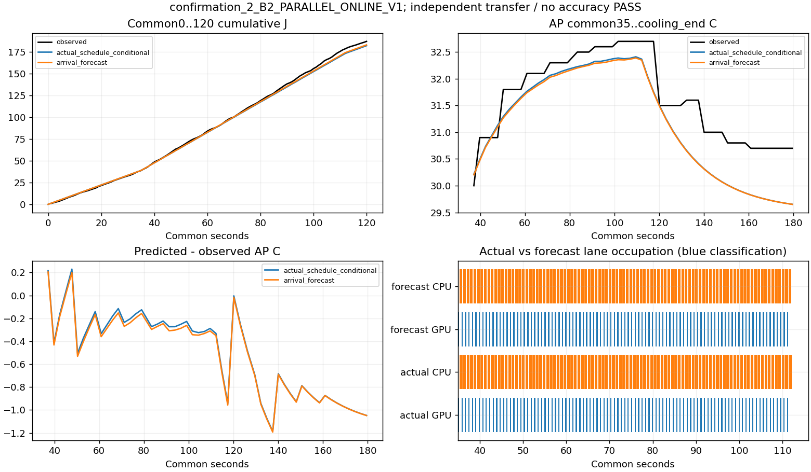
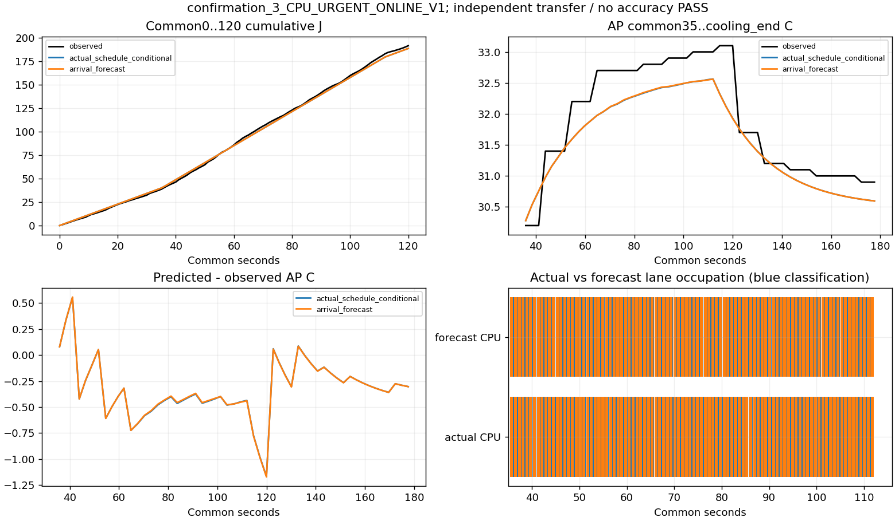
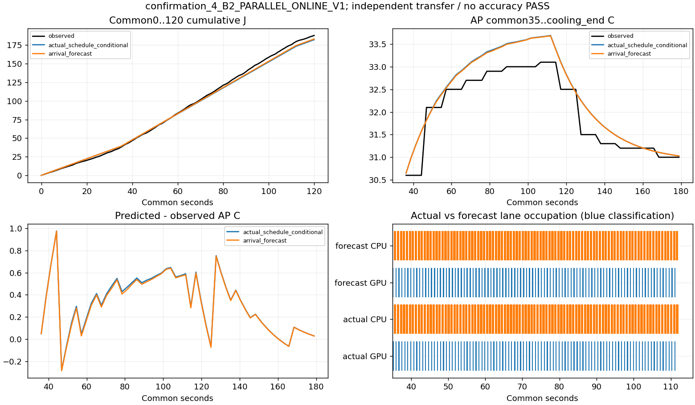
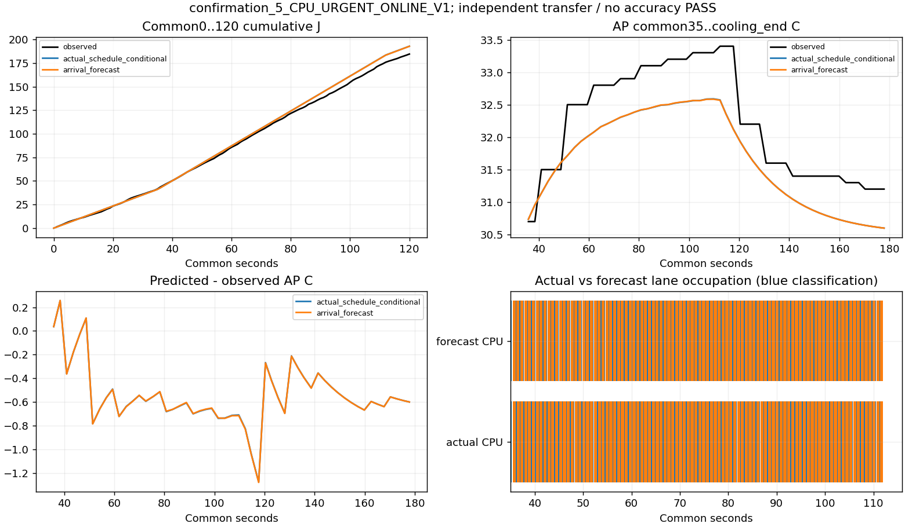
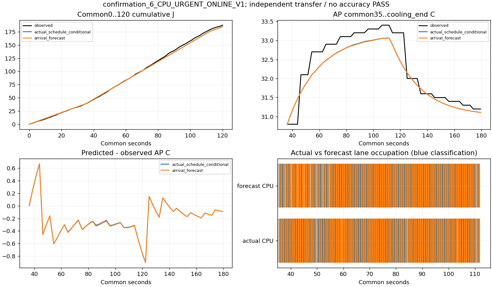
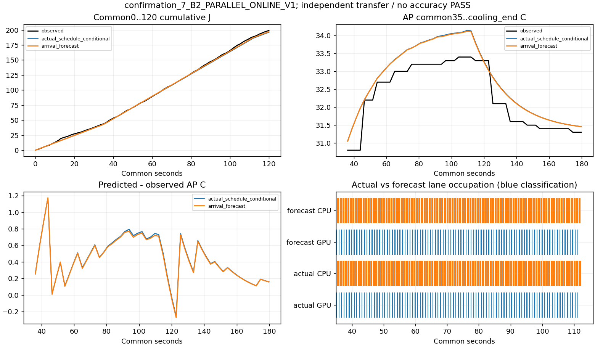

실측·실제 일정 조건부 A·예정 도착 예측 B를 구분. 모형 재적합 없음. 예측 입력은 부하 전 AP 이력/전력과 등록된 입력이며 미래 AP/전류는 사용하지 않음. 기존96요청 확인과 별도 block.
strict=false, accuracy_pass=null, policy_winner=null, experiment_ready=false. raw 전류=mA 조건부 해석·절대 에너지 정확도 미인증. 전체 기기 J이며 CPU/GPU rail 전력 아님.
지원: 등록된 192요청/400ms CPU·PAR 입력에 대한 제한 전이 평가·초기조건부 예측. 임의 도착/온도/기기/열에 따른 처리율, 작은 에너지·열 차이에 의한 정책 선택은 미지원.
판독·재현 · 오차표 · 경로 CSV · 일정 차이 · 실제 상태 · 관측 쌍별 차이 · 동일 초기조건의 모형 차이
{
"receipt_status": "completed_descriptive_only",
"planned_sessions": 8,
"prediction_eligible_sessions": 8,
"prediction_exclusions": []
}| index | policy | prediction | observed_120s_j | energy_signed_error_j | mae_c | max_absolute_error_c | actual_deadline_met |
|---|---|---|---|---|---|---|---|
| 0 | CPU_URGENT_ONLINE_V1 | actual_schedule_conditional | 190.93044370931628 | -5.497113104263434 | 0.18647624836511192 | 0.7518121488297567 | 192 |
| 0 | CPU_URGENT_ONLINE_V1 | arrival_forecast | 190.93044370931628 | -5.54051820421256 | 0.18599673985933873 | 0.7512829690374723 | 192 |
| 1 | B2_PARALLEL_ONLINE_V1 | actual_schedule_conditional | 185.62662777357272 | 3.7696856289327343 | 0.35442648335956295 | 1.0265419611554698 | 192 |
| 1 | B2_PARALLEL_ONLINE_V1 | arrival_forecast | 185.62662777357272 | 4.6681834324955105 | 0.35169597769461564 | 1.0318548545079587 | 192 |
| 2 | B2_PARALLEL_ONLINE_V1 | actual_schedule_conditional | 186.74089106516365 | -4.928497548610181 | 0.5185806327831665 | 1.1871212627269223 | 192 |
| 2 | B2_PARALLEL_ONLINE_V1 | arrival_forecast | 186.74089106516365 | -4.0351399327898605 | 0.5332978303251453 | 1.1930446028701915 | 192 |
| 3 | CPU_URGENT_ONLINE_V1 | actual_schedule_conditional | 191.732146667857 | -2.935429145589609 | 0.367877233533095 | 1.168597525523957 | 192 |
| 3 | CPU_URGENT_ONLINE_V1 | arrival_forecast | 191.732146667857 | -2.9312934362671967 | 0.3670992156063893 | 1.17202081996059 | 192 |
| 4 | B2_PARALLEL_ONLINE_V1 | actual_schedule_conditional | 187.88379938677744 | -5.671837082073807 | 0.34763216314146095 | 0.9768830021287762 | 192 |
| 4 | B2_PARALLEL_ONLINE_V1 | arrival_forecast | 187.88379938677744 | -4.683065697374218 | 0.3407181867986016 | 0.9748636214672857 | 192 |
| 5 | CPU_URGENT_ONLINE_V1 | actual_schedule_conditional | 184.49115907570092 | 8.307576468147886 | 0.5587546313481424 | 1.2771112449997304 | 192 |
| 5 | CPU_URGENT_ONLINE_V1 | arrival_forecast | 184.49115907570092 | 8.209970360446817 | 0.5593157328206285 | 1.2806460573194656 | 192 |
| 6 | CPU_URGENT_ONLINE_V1 | actual_schedule_conditional | 187.53339168334185 | -2.9164064054140795 | 0.26396148477544373 | 0.9010747446182634 | 192 |
| 6 | CPU_URGENT_ONLINE_V1 | arrival_forecast | 187.53339168334185 | -3.065310318639206 | 0.2666698340905847 | 0.904360523432814 | 192 |
| 7 | B2_PARALLEL_ONLINE_V1 | actual_schedule_conditional | 199.2156804972104 | -2.966122577095689 | 0.44901084301551386 | 1.1727143806103264 | 192 |
| 7 | B2_PARALLEL_ONLINE_V1 | arrival_forecast | 199.2156804972104 | -2.1483468490860957 | 0.44255373570088247 | 1.1736598242917395 | 192 |
서로 다른 초기 AP·배경 전력·실행 시각을 그대로 표시. 인과 효과·미래 오차 한도·정책 우월성 미판정. 동일 초기조건의 모형 PAR−CPU −2.091J는 실제 쌍별 관측 차이와 구분.
| 쌍 | 관측 PAR−CPU J | 최고 AP 차이 °C | 초기 AP 차이 °C | 부하 전 W 차이 | 긴급 P95 차이 ms |
|---|---|---|---|---|---|
| 0 | -5.3038159357435575 | 0.3999999999999986 | 0.5 | 0.058297310843854255 | -130.44953900000002 |
| 1 | -4.991255602693343 | -0.3999999999999986 | -0.40000000000000213 | -0.03336925415765002 | -131.38084500000002 |
| 2 | 3.3926403110765193 | -0.29999999999999716 | -0.09999999999999787 | -0.06174670122038761 | -130.76984400000003 |
| 3 | 11.682288813868553 | 0.0 | 0.1999999999999993 | 0.12241703236433055 | -127.91223500000001 |
{
"complete_pairs": 4,
"mean_observed_par_minus_cpu_j": 1.194964396627043,
"min_observed_difference_j": -5.3038159357435575,
"max_observed_difference_j": 11.682288813868553,
"descriptive_sd_j": 8.06881272856215,
"future_error_bound": null,
"causal_effect_established": false
}






